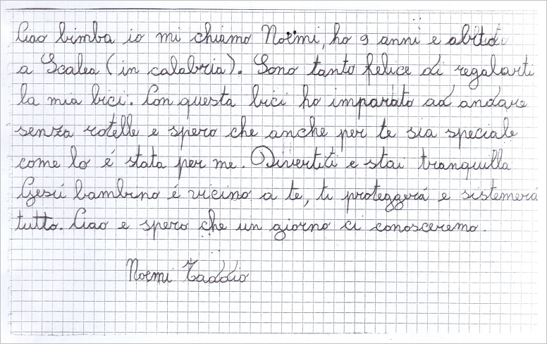

CRI - Terremoto Centro Italia
Attenzione: leggere attentamente il footer.
Attenzione: leggere attentamente il footer.
Per sostenere le popolazioni colpite dal devastante terremoto del 24 Agosto è possibile utilizzare il conto corrente attivato da Poste Italiane e Croce Rossa Italiana con le seguenti coordinate:
oppure utilizzare il conto corrente della Croce Rossa Italiana con le seguenti coordinate:
La donazione in denaro sarà interamente utilizzata da Croce Rossa Italiana per mettere a disposizione della popolazione derrate alimentari e beni di prima necessità che potremmo non avere immediatamente a disposizione nei nostri centri logistici, e per il mantenimento efficiente delle nostre strutture di accoglienza, potendo quindi rispondere prontamente ai bisogni che si manifestano di ora in ora.
Sono stati raccolti 10.969.797,14 euro al 13 ottobre 2016. Grazie!
Nell'impossibilità di ringraziare tutti i cittadini e le aziende che ci hanno sostenuto, vorremmo fosse una lettera la donazione che ci racconta:

Il sito è stato creato per un esercizio nell'ambito del corso di Tecnologie Web e non rappresenta quindi la Croce Rossa Italiana. I testi sono liberamente ispirati dal sito della Croce Rossa Italiana e le foto sono state tratte dalla sezione dedicata al terremoto nel centro Italia.

Ombretta Gaggi - All rights reserved